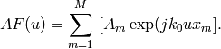
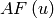
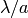
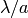
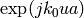
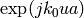
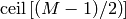
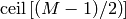
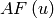
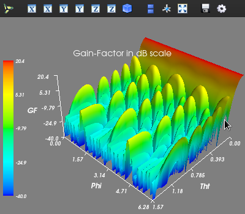

A Few Examples¶
| Release: | 0.0.0 |
|---|---|
| Date: | July 03, 2011 |
Intro - To be done!
Import and Export¶
- examples.at_import_ex()¶
at_import() is a simple function to import CSV text files as Numpy ndarrays. This will open a simple GUI dialog box asking for the place where your CSV file is located:
import arraytool.planar as planar planar.at_import()
- examples.at_export_ex()¶
Similarly, at_export() can be used to export any Numpy ndarray data to a CSV file. This will open a simple GUI dialog box asking for the location where the CSV file needs to be saved:
import arraytool.planar as planar planar.at_export()
Input Format¶
- examples.ip_format_ex()¶
One way to generate Arraytool’s input format is to use the function ip_format():
import arraytool.planar as planar import numpy as np # Array lattice parameters (a & b are normalized with respect to the wavelength) a = 0.5 # separation between the elements along x-axis b = 0.7 # separation between the elements along y-axis gamma = np.pi / 2 # lattice angle in radians # Array Excitation information M = 1 # no. of elements along x-axis N = 11 # no. of elements along y-axis A = np.ones((N, M)) # A simple uniform planar excitation # Generating Arraytool input format array_ip = planar.ip_format(a, b, A, gamma) print array_ip
In the above coding, matrix A represents the planar array arrangement which is shown below.
To be done!
Also, if needed, one can plot the array excitation using the option plot of ip_format(). If the array is linear (either along x or y axis), a 2D plot is generated using Matplotlib. If the given array is planar, a 3D stem plot is generated using Mayavi. Two such simple plots are shown below.
To be done!
Another way is, to simply make a CSV file in the below format and and import it using the function at_import().
Array Factor Zeros¶
- examples.AF_zeros_ex()¶
Array factor of a linear discrete array (neglecting any normalization factor) is defined as

Some of the array factor properties, assuming that the array elements are uniformly placed, are given as:
- Array factor  is a periodic function in the
 - domain with a period of , where
- domain with a period of , where  is the
separation between elements.
is the
separation between elements. - Since is a polynomial of the order
 in
, if we know zeros of the array factor
(with in a period), we can easily evaluate all the array coefficients
in
, if we know zeros of the array factor
(with in a period), we can easily evaluate all the array coefficients  .
In addition, in most of the cases (except shaped beam synthesis, etc), these
zeros are symmetrically located on the axis. So, in symmetric cases,
we need only  zeros. If the pattern
is a difference pattern, then zero at the origin also should be taken into
consideration.
.
In addition, in most of the cases (except shaped beam synthesis, etc), these
zeros are symmetrically located on the axis. So, in symmetric cases,
we need only  zeros. If the pattern
is a difference pattern, then zero at the origin also should be taken into
consideration.
In Arraytool, the function AF_zeros() provides these zeros. So, let us get the array factor zeros for some simple array excitations:
import arraytool.planar as planar a = 0.5 # separation between the elements along x-axis (normalized WRS wavelength) M = 10 # no. of elements along x-axis SLR = 25 # side-lobe ratio in dB R = 10 ** (SLR / 20) # converting SLR from dB scale to linear scale U0 = planar.AF_zeros(a, M, R, dist_type="Dolph-Chebyshev") print 'arrayfactor zeros:', '\n', U0
The output is as shown below:
>>> arrayfactor zeros: array([[ 0.2348126 ], [ 0.38767709], [ 0.58329742], [ 0.78998547]])
- Array factor  is a periodic function in the
Excitation from AF Zeros¶
- examples.A_frm_zeros_ex()¶
In the previous section we obtained the array factor zeros. Now, we can use those zeros to obtain the array excitation using the function A_frm_zeros() as shown below:
import arraytool.planar as planar a = 0.5 # separation between the elements along x-axis (normalized WRS wavelength) M = 10 # no. of elements along x-axis SLR = 25 # side-lobe ratio in dB R = 10 ** (SLR / 20) # converting SLR from dB scale to linear scale U0 = planar.AF_zeros(a, M, R, dist_type="Dolph-Chebyshev") A = planar.A_frm_zeros(U0, a, M, symmetry="even").T # finding excitation coefficients print 'array coefficients:', '\n', A.T
The output is as shown below:
>>> array coefficients: array([[ 0.64163439], [ 0.59442917], [ 0.77799478], [ 0.921367 ], [ 1. ], [ 1. ], [ 0.921367 ], [ 0.77799478], [ 0.59442917], [ 0.64163439]])
As can be seen above, array coefficients at the center are normalized to the value 1.
Generating Various Types of Array Excitations¶
- examples.dist_ex()¶
Most of the times, we don’t have to go through the process given in the last two sections. Instead, we can get the excitation values in one single step using the function dist(). This function gives array excitation coefficients corresponding to various array distribution types such as Dolph-Chebyshev, McNamara-Zolotarev-sum, McNamara-Zolotarev-diff-f, McNamara-Zolotarev-diff-s, Taylor, Bayliss, Pritchard-Chebyshev-be, Pritchard-Chebyshev-ue, etc. A simple example to obtain Taylor n-bar (also known as Villeneuve) distribution is shown below:
import arraytool.planar as planar a = 0.5 # separation between the elements along x-axis (normalized WRS wavelength) M = 10 # no. of elements along x-axis SLR = 25 # side-lobe ratio in dB R = 10 ** (SLR / 20) # converting SLR from dB scale to linear scale A = planar.dist(a, M, R, dist_type_x="Taylor", mbar=2, alpha_x=0) print 'array coefficients:', '\n', A.T
The output is as shown below:
>>> array coefficients: array([[ 0.52917308], [ 0.61909302], [ 0.76458654], [ 0.91008006], [ 1. ], [ 1. ], [ 0.91008006], [ 0.76458654], [ 0.61909302], [ 0.52917308]])
Note
However, the function dist() will not provide any information regarding the array factor zeros. If this information is necessary, for the time being, there is no other option but to use the function AF_zeros()
Evaluating 2D Array Factor of a Linear Array in u - domain¶
- examples.pattern_u_ex()¶
Obviously, the most important task in array analysis and design is to plot the actual array factor. In order to accomplish this task, one can use the function pattern_u(). A simple example to plot a Dolph-Chebyshev pattern is shown below:
import arraytool.planar as planar a = 0.6 # separation between the elements along x-axis (normalized WRS wavelength) M = 10 # no. of elements along x-axis SLR = 25 # side-lobe ratio in dB R = 10 ** (SLR / 20) # converting SLR from dB scale to linear scale A = planar.dist(a, M, R, dist_type_x="Dolph-Chebyshev") # Converting the 'excitation & position' information into Arraytool input format array_ip = planar.ip_format(a, b=0, A=A) # Calling the 'pattern_u' function to evaluate and plot 2D AF/GF/NF [u,AF] = planar.pattern_u(array_ip, u_scan=0, u_min= -2, u_max=2, u_num=300, scale="dB", dB_limit= -40, factor="NF", plot_type="rect", lattice=True)

If a polar plot is needed, then the following command can be used:
# Calling the 'pattern_u' function to evaluate and plot 2D AF/GF/NF [u,AF] = planar.pattern_u(array_ip, u_scan=0, u_min= -1, u_max=1, u_num=300, scale="dB", dB_limit= -40, factor="NF", plot_type="polar", lattice=True)

Evaluating 3D Array Factor of a planar Array in uv - domain¶
- examples.pattern_uv_ex()¶
When the given array is planar, i.e., a 2D array in the
 -plane, then
we need to plot the pattern as a function of
-plane, then
we need to plot the pattern as a function of  . In order to accomplish
this task, one can use the function pattern_uv(). A simple example to plot
radiation pattern of a planar uniform array is shown below:
. In order to accomplish
this task, one can use the function pattern_uv(). A simple example to plot
radiation pattern of a planar uniform array is shown below:import arraytool.planar as planar import numpy as np a = 0.6 # separation between the elements along x-axis (normalized WRS wavelength) b = 0.5 # separation between the elements along y-axis (normalized WRS wavelength) M = 10 # no. of elements along x-axis N = 11 # no. of elements along y-axis A = np.ones((N, M)) # Uniform planar excitation # Converting the 'excitation & position' information into Arraytool input format array_ip = planar.ip_format(a, b, A) # Calling the 'pattern_uv' function to evaluate and plot 3D AF/GF/NF [u, v, AF] = planar.pattern_uv(array_ip, u_scan=0, v_scan=0, u_min= -2, u_max=2, u_num=300, v_min= -2, v_max=2, v_num=300, scale="dB", dB_limit=-40, factor="NF", plot_type="rect", mayavi_app=False)

If a contour plot is needed, then the following command can be used:
# Calling the 'pattern_uv' function to evaluate and plot 3D AF/GF/NF [u, v, AF] = planar.pattern_uv(array_ip, u_scan=0, v_scan=0, u_min= -2, u_max=2, u_num=300, v_min= -2, v_max=2, v_num=300, scale="dB", dB_limit=-40, factor="NF", plot_type="contour", mayavi_app=False)

Evaluating 3D Array Factor of an arbitrary 3D Array in (tht, phi) - domain¶
- examples.pattern_tp_ex()¶
In the previous section, plotting in
is described. However, some times
it may be necessary to plot in  domain too. In such cases,
one can use the function pattern_tp(). A simple example to plot
radiation pattern of a planar uniform array in domain is
shown below:
domain too. In such cases,
one can use the function pattern_tp(). A simple example to plot
radiation pattern of a planar uniform array in domain is
shown below:import arraytool.planar as planar import numpy as np a = 0.6 # separation between the elements along x-axis (normalized WRS wavelength) b = 0.5 # separation between the elements along y-axis (normalized WRS wavelength) M = 10 # no. of elements along x-axis N = 11 # no. of elements along y-axis A = np.ones((N, M)) # Uniform planar excitation # Converting the 'excitation & position' information into Arraytool input format array_ip = planar.ip_format(a, b, A) # Calling the 'pattern_tp' function to evaluate and plot 3D AF/GF/NF [tht, phi, AF] = planar.pattern_tp(array_ip, tht_scan=(0)*np.pi, phi_scan=(0)*np.pi, tht_min= 0, tht_max=0.5*np.pi, tht_num=200, phi_min= 0*np.pi, phi_max=2*np.pi, phi_num=200, scale="dB", dB_limit= -40, factor="GF", plot_type="polar")

If a rectangular surf plot is needed, then the following command can be used:
# Calling the 'pattern_tp' function to evaluate and plot 3D AF/GF/NF [tht, phi, AF] = planar.pattern_tp(array_ip, tht_scan=(0)*np.pi, phi_scan=(0)*np.pi, tht_min= 0, tht_max=0.5*np.pi, tht_num=200, phi_min= 0*np.pi, phi_max=2*np.pi, phi_num=200, scale="dB", dB_limit= -40, factor="GF", plot_type="rect")
If a contour plot is needed, then the following command can be used:
# Calling the 'pattern_tp' function to evaluate and plot 3D AF/GF/NF [tht, phi, AF] = planar.pattern_tp(array_ip, tht_scan=(0)*np.pi, phi_scan=(0)*np.pi, tht_min= 0, tht_max=0.5*np.pi, tht_num=200, phi_min= 0*np.pi, phi_max=2*np.pi, phi_num=200, scale="dB", dB_limit= -40, factor="GF", plot_type="contour")

Usage of Zolotarev Polynomial Module¶
To be done!